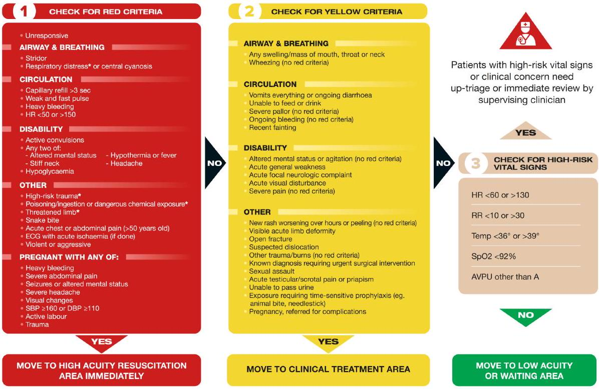

EMERGENCY CARE ALGORITHMS 2023
These Emergency Care Algorithms © are evidence-based and are freely downloadable at www.emergencymedicinekenya.org/algorithms as part of the Emergency Medicine Kenya Foundation's commitment to free, open-access medical education (#FOAMed)
ADDITIONAL DIGITAL TOOLS FOR USE WITH THESE ALGORITHMS
App your emergency care game by downloading the Casualty App on your phone or tablet for easy access to these algorithms and the latest emergency care updates.
www.emergencymedicinekenya.org/casualty
Want to learn more? Get FREE access to our online up-to-date Emergency Medicine Textbook
www.emergencymedicinekenya.org/onenote
Watch video on our You Tube Channel
Learn how to perform different emergency care procedures and so much more via our You Tube channel
www.emergencymedicinekenya.org/videos
MD+ CALC
MDCalc is a free online medical reference for healthcare professionals that provides point-of-care clinical decisionsupport tools, including medical calculators, scoring systems, and algorithms.
www.mdcalc.com
Adult Triage Criteria
Developed by World Health Organization, The International Committee of the Red Cross, Médecins Sans Frontières
| General Trauma | Road Traffic |
|---|---|
| Fall from twice person's height | High speed motor vehicle crash |
| Penetrating trauma excluding distal to knee/ elbow with bleeding controlled | Pedestrian or cyclist hit by vehicle |
| Crush injury | Other person in same vehicle died at scene |
| Polytrauma (injuries in multiple body areas) | Motor vehicle crash without a seatbelt |
| Patient with bleeding disorder or on anticoagulation | Trapped or thrown from vehicle (including motorcycle) |
| Pregnant |
| (the below criteria refer to partial or full thickness burns) Greater than 15% body surface area | Inhalation injury |
| Circumferential or involving face or neck | Any burn in age <2 or age >70 |
| Signs of Respiratory Distress | |
|---|---|
| Adult | Child |
| Very fast or very slow breathing | Very fast breathing |
| Inability to talk or walk unaided | Inability to talk, eat or breastfeed |
| Confused, sleepy or agitated | Nasal flaring, grunting |
| Accessory muscle use (neck, intercostal, abdominal) | Accessory muscle use (e.g., head nodding, chest indrawing) |
Ingestion/exposure
Use of clinical signs alone may not identify all those who need time-dependent intervention. Patients with high risk ingestion or exposure should initially be up-triaged to Red for early clinical assessment.